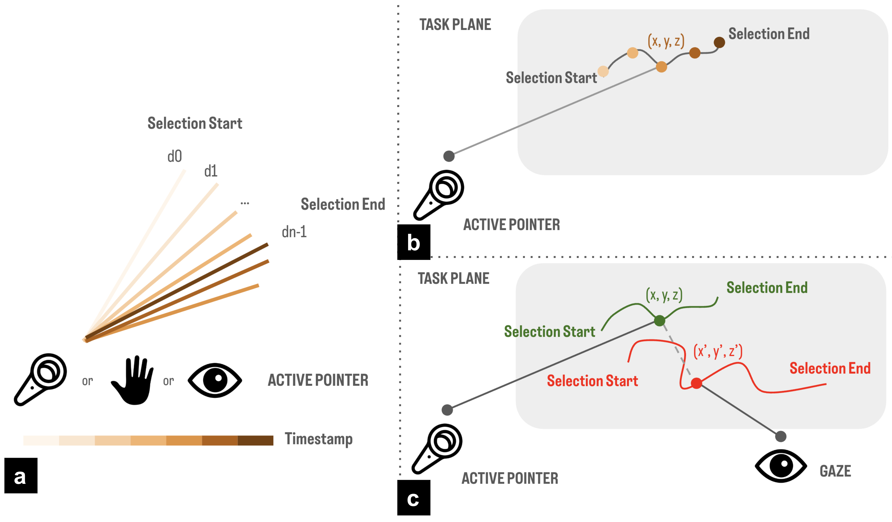
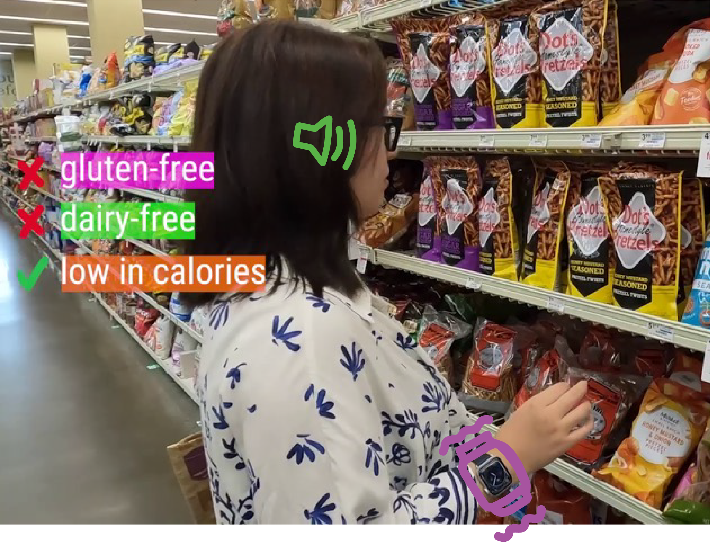
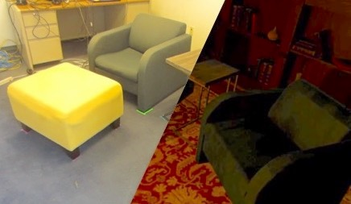
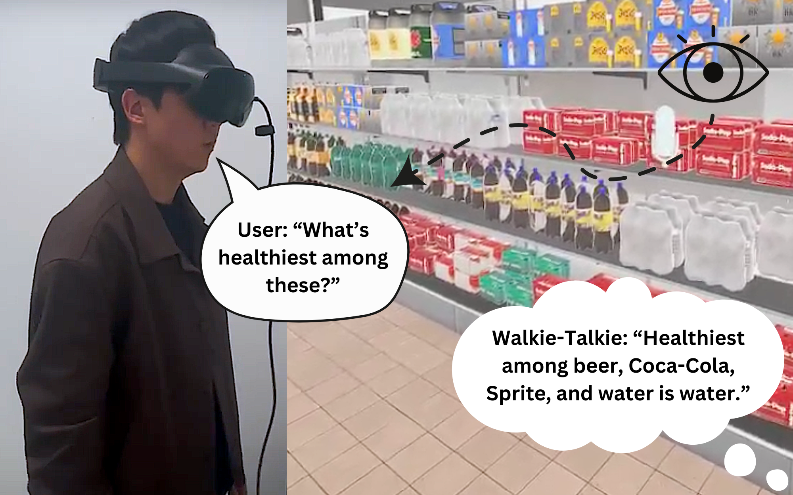

Squiggle: Multimodal Lasso Selection in the Real World
UIST 2025: ACM Symposium on User Interface Software and Technology

Investigating Wrist Deflection Scrolling Techniques for Extended Reality
CHI 2023: ACM Conference on Human Factors in Computing Systems

Exploring Hybrid Virtual-Physical Homes
DIS 2020: ACM Designing Interactive Systems Conference
Honorable Mention Award (top 5%)

PinchType: Text Entry for Virtual and Augmented Reality Using Comfortable Thumb to Fingertip Pinches
CHI EA 2020: Extended Abstracts of the ACM Conference on Human Factors in Computing Systems